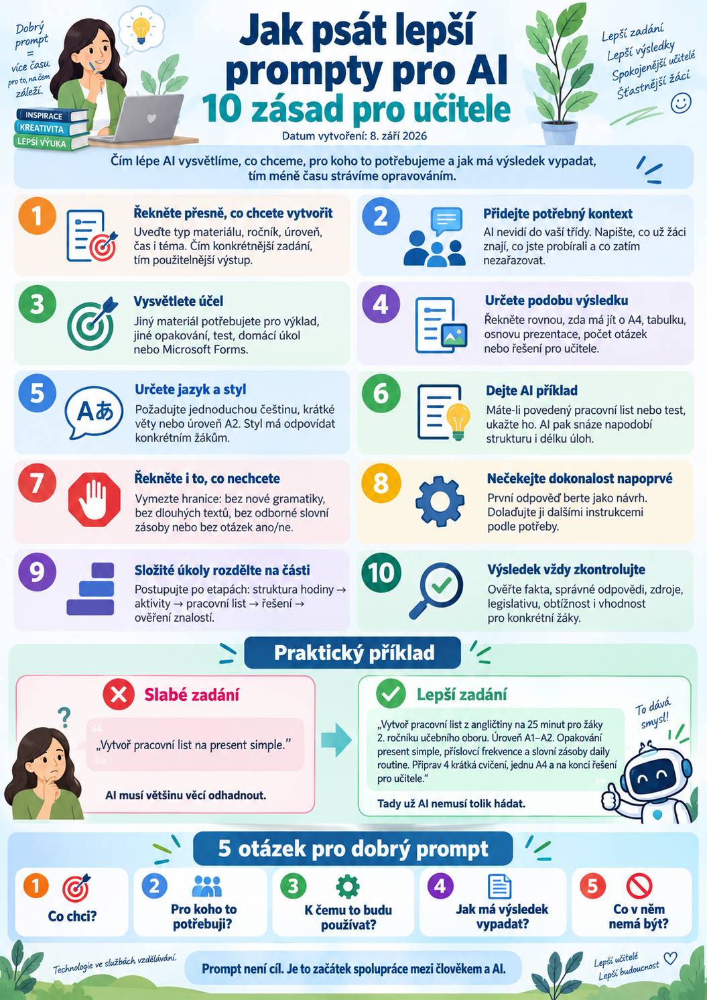

Když začneme používat ChatGPT, Gemini, Copilot nebo jiný AI nástroj, velmi rychle zjistíme jednu věc: kvalita odpovědi často závisí na tom, jak dobře formulujeme zadání.
Neznamená to ale, že musíme studovat složité „promptovací formule“ nebo psát několikastránkové instrukce. Moderní AI si poradí i s běžnou přirozenou řečí. Čím lépe jí ale vysvětlíme, co chceme, pro koho to potřebujeme a jak má výsledek vypadat, tím méně času potom strávíme opravováním.
Ve školním prostředí je to zvlášť důležité. Jinak totiž musí vypadat pracovní list pro první ročník učebního oboru, jinak maturitní otázka, jinak prezentace pro učitele a úplně jinak materiál pro žáka s podpůrným opatřením.
Podívejme se proto na deset jednoduchých zásad, které mohou práci s AI učiteli výrazně usnadnit.

1. Řekněte přesně, co chcete vytvořit
Častou chybou je příliš obecné zadání.
Například:
„Vytvoř pracovní list na present simple.“
AI nějaký pracovní list vytvoří. Jenže neví, pro jak staré žáky, na jaké úrovni, na jak dlouhou dobu ani k jakému účelu.
Mnohem lepší je například:
„Vytvoř pracovní list z angličtiny na 25 minut pro žáky 2. ročníku učebního oboru na úrovni A1–A2. Tématem je opakování present simple.“
Najednou má AI podstatně více informací, podle kterých může materiál připravit.
2. Přidejte potřebný kontext
AI nevidí do naší třídy. Neví, co jsme učili minulý týden, jak rychle žáci pracují ani s jakou učebnicí pracujeme. Pokud je tato informace pro výsledek důležitá, musíme ji doplnit.
Můžeme například napsat:
„Žáci už znají present simple, příslovce frekvence a slovní zásobu daily routine. Novou gramatiku zatím nezařazuj.“
Právě kontext bývá často důležitější než komplikované promptovací techniky.
3. Vysvětlete účel
Stejné téma může být zpracováno mnoha způsoby. Jiný materiál potřebujeme pro výklad, procvičování, opakování, domácí úkol, test, skupinovou práci nebo například jako podklad do Microsoft Forms.
Proto je dobré AI říct, k čemu má výsledný materiál sloužit.
„Materiál použiji na začátku hodiny jako desetiminutové opakování.“
AI potom může lépe zvolit rozsah i náročnost.
4. Určete podobu výsledku
Pokud víme, jak má výstup vypadat, řekněme to rovnou.
- „Připrav pracovní list na jednu A4.“
- „Výsledek zobraz jako přehlednou tabulku.“
- „Vytvoř osnovu prezentace na osm snímků.“
- „Připrav deset otázek se čtyřmi možnostmi odpovědi.“
- „Na konci přidej řešení pro učitele.“
Tím ušetříme další kolo úprav.
5. Určete jazyk a styl
AI umí velmi snadno měnit styl komunikace. U školních materiálů můžeme například požadovat:
- „Používej jednoduchou češtinu.“
- „Instrukce formuluj krátkými větami.“
- „Angličtinu drž na úrovni A2.“
- „Nepoužívej zbytečně odborné pojmy.“
- „Text musí být srozumitelný patnáctiletému žákovi.“
To je zvlášť užitečné při přípravě materiálů pro různě schopné skupiny žáků.
6. Dejte AI příklad
Jeden dobrý příklad bývá často účinnější než dlouhé vysvětlování.
Pokud už máme pracovní list, test nebo prezentaci, která nám vyhovuje, můžeme ji AI poskytnout a říct:
„Nový materiál vytvoř ve stejné struktuře.“
AI tak rychle pochopí způsob členění, délku úloh i styl zadání. Tato metoda je velmi praktická i při budování jednotného vzhledu učebních materiálů.
7. Řekněte také, co nechcete
Dobré zadání nemusí obsahovat jen požadavky. Velmi užitečné bývá vymezit také hranice.
- „Nepoužívej gramatiku, kterou žáci ještě neznají.“
- „Nevytvářej příliš dlouhé texty.“
- „Nevkládej odbornou slovní zásobu.“
- „Nepoužívej otázky typu ano/ne.“
Taková omezení mohou zabránit tomu, aby AI vytvořila materiál, který je sice formálně správný, ale pro konkrétní třídu nepoužitelný.
8. Nečekejte dokonalý výsledek na první pokus
První odpověď AI je dobré chápat jako návrh.
Můžeme pokračovat například:
- „Cvičení 2 je příliš jednoduché, udělej ho náročnější.“
- „Text zkrať asi o třetinu.“
- „Přidej více praktických situací.“
- „Zachovej obsah, ale uprav jazyk pro slabší žáky.“
Práce s AI je tedy často spíš krátký dialog než jediné zadání. A právě zde bývá největší rozdíl mezi začátečníkem a zkušenějším uživatelem AI.
9. Složité úkoly rozdělte na části
Pokud chceme po AI příliš mnoho věcí najednou, výsledek může být nepřehledný nebo některé části zadání přehlédne.
Místo požadavku:
„Připrav celou hodinu, prezentaci, pracovní list, test a domácí úkol.“
je často lepší postupovat po etapách:
- navrhni strukturu hodiny,
- připrav aktivity,
- vytvoř pracovní list,
- doplň řešení,
- připrav krátké ověření znalostí.
Tento způsob práce je užitečný nejen při tvorbě učebních materiálů, ale také při práci s rozsáhlejšími projekty.
10. Výsledek vždy zkontrolujte
Tohle je možná nejdůležitější pravidlo. AI může vytvořit velmi přesvědčivou odpověď a přesto se splést.
Učitel by měl kontrolovat především:
- faktickou správnost,
- správné odpovědi,
- citace a zdroje,
- legislativní informace,
- obtížnost vzhledem k věku žáků,
- vhodnost obsahu pro konkrétní výuku.
AI může výrazně urychlit naši práci. Odpovědnost za výsledný materiál ale stále zůstává na člověku.
Praktický příklad
Podívejme se na rozdíl mezi dvěma zadáními.
Jednoduché zadání
„Vytvoř pracovní list na present simple.“
AI musí většinu věcí odhadnout.
Přesnější zadání
Tady už AI nemusí tolik hádat. A právě o to při dobrém zadávání jde.
Nemusíme psát dokonalé prompty
Kolem promptování se někdy vytváří dojem, že existuje nějaká tajná správná formule, která z AI dostane dokonalý výsledek.
Ve skutečnosti je princip mnohem jednodušší.
Potřebujeme AI dobře vysvětlit:
- Co chci?
- Pro koho to potřebuji?
- K čemu to budu používat?
- Jak má výsledek vypadat?
- Co v něm naopak být nemá?
A potom výsledek případně upravit další instrukcí.
Moderní AI stále lépe rozumí běžnému jazyku. Dobré promptování proto není soutěž o nejdelší zadání. Je to především schopnost jasně popsat problém.
Od promptu k práci s AI
Zároveň se postupně mění i samotný způsob, jakým AI používáme.
Dříve jsme často zadali jeden prompt a čekali na odpověď. Dnes můžeme AI poskytnout dokumenty, učebnice, vlastní materiály nebo dlouhodobé instrukce. AI může pracovat v několika krocích, používat nástroje nebo fungovat jako specializovaný pomocník.
Prompt proto není cílem. Je to spíš začátek spolupráce mezi člověkem a AI.
A právě schopnost dobře popsat zadání zůstane užitečná bez ohledu na to, zda používáme ChatGPT, Gemini, Copilot nebo nástroje, které teprve přijdou.
Co chci vytvořit?
Pro koho to potřebuji?
K čemu to budu používat?
Jak má výsledek vypadat?
Co v něm nemá být?